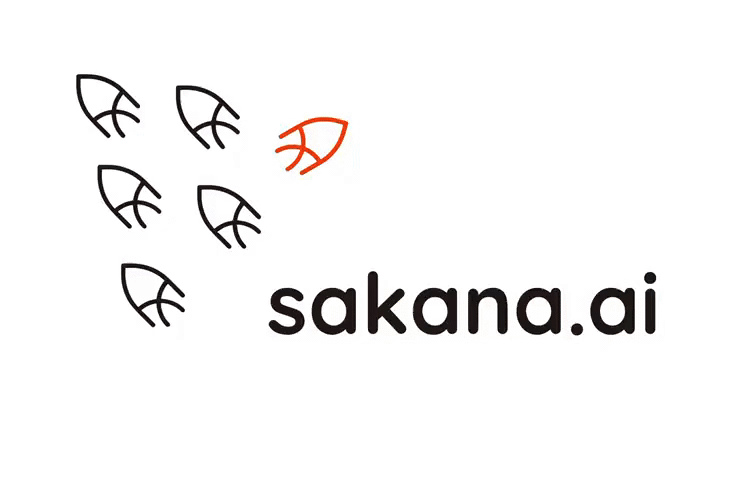
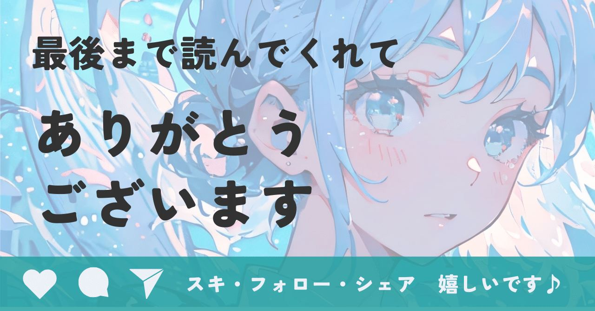

日本発のスタートアップ、Sakana AIが仕掛ける知略の革命。彼らは資本の大きさが勝敗を決めるAI開発のルールを、根底から覆していく。
2026年3月時点で世界のAI開発のパワーバランスを書き換えている、生成AIを開発するスタートアップ「Sakana AI」のビジネスモデルと技術的優位性を深掘りしました！
巨額の資金を投じてモデルを作るというAIの開発スタイルが、本格的に経済的・エネルギー的な限界を露呈し始めました。
そんな情勢の中でシリコンバレーのルールに縛られず、独自の効率性で存在感を放っているのが、東京に拠点を置く日本初のスタートアップSakana AIです。
Sakana AIとは
Googleのトップ研究者らが2023年に東京で設立。既存のAIモデルを自動で組み合わせ、新たな能力を持つAIを生成する進化的モデルマージ技術が中核。
2026年1月にはGoogleとの戦略的パートナーシップを締結し、評価額約3,700億円（25億ドル）を超える日本発のユニコーン企業。
NVIDIAとの提携、そして経産省のバックアップだけでなく防衛装備庁との大規模契約。
https://twitter.com/sakanaailabs/status/2032260904138792986?s=46
経済や金融、そして防衛。
日本の国家安全保障を支えるインフラへと深化していく。
支援先企業の資本効率や競合優位性の構築をサポートする立場として、
資金力で勝るOpenAIやGoogleに対し、
なぜ東京の少数精鋭チームが対等以上に
渡り合えているのか？
という2026年以降のビジネス環境を読み解くために、その全貌をまとめてみました。
1. 設立のきっかけ。開発の物量主義への問い
Sakana AIの誕生は、現在のAI開発が抱える構造的なコスト課題に対する発明者自身の想いから始まりました。
CTO(最高技術責任者)のライオン・ジョーンズ氏は、現代AIの核である「Transformer」技術の生みの親の一人。
彼は生み出した技術が巨大な計算資源を注ぎ込むようになってしまった現状に、強い違和感を抱いていました。
資本の壁
数兆円の資金を持つ企業しか
AIを作れない現状への危機感
持続可能性の欠如
膨大な電力消費や大規模データセンター建設
などを前提とした開発モデルへの疑問
この課題を突破するために選んだのが、
自然界の進化のプロセスをAI開発に持ち込む
という、全く新しいアプローチ。

赤い魚が、群れの中で一匹だけ逆方向に泳いでいますよね。これには、
周囲と同じ方向（物量主義）ではなく、
逆方向に泳いで次に来る価値を追い求める
という強い決意が込められている。
みんなが巨大化を目指す中で、一匹だけ効率と進化へ逆走する。その姿がいま、世界のルールを書き換えようとしているんですね。
2. 進化計算によるモデルマージ。技術的優位性を深掘り
Sakana AIの核心は、
Evolutionary Model Merge
進化的モデルマージ
という高度な技術。
一般的に高性能なAIを作るには、膨大なデータを読み込む事前学習が必要になります。
我が家にはAI開発の機械があるんですが、
電気代は高いし稼働してると室温がちょっと上がるくらい、エネルギー使うんですよね。
https://note.com/alive_sheep6563/n/n655e8bcc21f6
これに対し、Sakana AIは
① 既存の特定の分野に強いAIを複数用意
② 最高の結果を出すために、その比率や
組み合わせをAI自身に探索させる
という、既存の知見を最適に掛け合わせて
新しい能力を抽出するスタイル。
この設計思想が、驚異的なコストパフォーマンスの源泉になってるんです。すごいですよね。
3. 開発コストを構造から破壊する。1,000億円 vs 数千万円
ここが支援者として最も強調したいポイント。
従来のAI開発とSakana AIのコア技術では、コスト構造に文字どおり桁違いの差が生まれます。
従来の開発（事前学習）
GPT-4やGeminiクラスのモデルを作るには、数千枚から数万枚の最先端GPUを数ヶ月稼働させる必要があります。
推定コスト→数百億〜1,000億円規模
Sakana AIの開発
既存モデルの掛け合わせをアルゴリズムで最適化するため、必要な計算機は数枚から数十枚のGPU、期間は数日から数週間で完了。
推定コスト→数百万円〜数千万円規模
つまり莫大な資金を溶かし続けなくても、
特定の産業ニーズに応える高性能AIを量産できてしまう。
この資産効率の高さが大きな強みなんですね。
開発コストが1,000分の1になるということは、単純に安上がりなだけではありません。
1回失敗しても、あと999回試行錯誤できる
これの何がすごいのかというと、巨大企業が一か八かの博打に時間をかける一方で、知力を尽くして数千回のアップデートを繰り返すことが可能である点。
この圧倒的な数の差こそが最終的な知能の質において大手を凌駕する、真の理由なんです。
リソースの限られたスタートアップの開発を加速させてくれるのではと、個人的に夢が膨らみますね。
4. まさに今、広まるフェーズに来たテクノロジー
これだけすごいのに、
なぜスマホにアプリが入っていないの？
という疑問が湧くかもしれませんね。
でも実は既に使われている技術なんです。
Sakana AIの最大の価値は、
モデルを自動生成する
アルゴリズム（システム）
にあります。システムは一般開放されておらず、提携企業のみに提供されているのが現状。
そして学習ベースとなる高品質なオープンソースモデル（MetaのLlama等）が、世界中で揃った2025年〜2026年というタイミングで、初めて真価を発揮するんです。
5. 社会実装の現在地。2026年の実情
2026年3月現在、彼らの技術はすでに実験の域を超え、社会実装のフェーズにあります。
金融・通信インフラへの導入
三菱UFJ銀行（MUFG）やNTTといった国内トップ企業たちが、自社の基幹システムへの導入を完了させています。
たとえば、
・高度な専門知識が必要な融資審査
・ネットワーク最適化
といった裏側で、Sakana AIのエージェントが自律的に稼働しているんです。
防衛・インテリジェンス領域への実装
さらに驚くべきは、防衛装備庁との大規模な委託研究契約の締結。
ドローンのようなエッジデバイスで動作する
小規模視覚言語モデル（SVLM）を活用し、
陸・海・空の膨大なデータを統合して意思決定を高速化する、指揮統制システムの高度化に乗り出した。
Google・NVIDIAとの提携
2026年1月にGoogleとの戦略的パートナーシップを強化。Google Cloud経由でSakana AIの技術が世界中の企業で利用可能に。
またNVIDIAとの協力により、日本国内での
エッジAI（デバイス上で動くAI）の普及も加速しています。
「AI Scientist」による研究の自律化
AIが自律的に仮説・実験・論文を執筆するシステムは、すでに創薬や新素材開発の現場で研究スピードを100倍にするツールとして定着しつつある。
使われてる場所が一般的な利用者の目に触れにくい部分だけど、私たちの生活に欠かせないところで活躍してるテクノロジーなんですよね。
6. 技術は変わる。でも戦略の重要性は変わらない
Sakana AIの事例から確信できたこと。
それは
資本力で勝てないなら、
アルゴリズムの効率で勝つ
規模を追うのではなく、
知略の質でポジショニングを築く
ことの大切さ。
加速するテクノロジーの波に飲まれずに、
どうすればより効率的により賢く社会を変えられるか。
Sakana AIの答えは、2026年以降の日本産業界にとって大きな希望になるかもしれませんね。
というわけで今回は推しスタートアップの回でした！最後までお付き合いいただき、ありがとうございます。
公式サイト、お魚ちゃんがいっぱい泳いでて
かわいかったです！
サムネを試しにイラストに変えてみました！
いつもの文字入りサムネ・イラスト
どっちが好みかコメントいただけると、
今後の参考になるので嬉しいです💦
